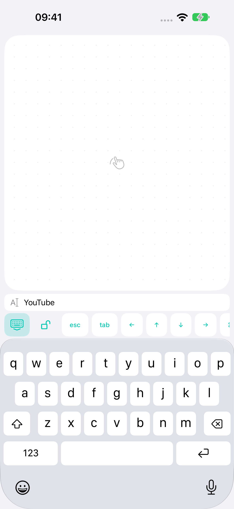

↖
A mouse that's always close
One finger moves the cursor. Two fingers scroll. Left click, right click, double click and hold to move or resize windows.
Move the cursor, scroll and type from your phone. BridgeX connects iPhone or Android to your computer. Mac is supported now; Windows is in development.
Free · iOS 17+ / Android 12+ · macOS 14+ · Windows planned
01Bluetooth or home Wi-Fi
02Control without the internet
03No account. No ads.
FROM THE SOFA. THE BED. YOUR FAVOURITE CHAIR.
One finger moves the cursor. Two fingers scroll. Left click, right click, double click and hold to move or resize windows.
Your phone keyboard, with a preview of what you type above it. Check typos while keeping a roomy trackpad.
Inertial scrolling, Mission Control, desktop switching and pinch-to-zoom in supported apps.
Bluetooth LE works without a router. At home, use Wi-Fi if you prefer. Commands are encrypted and never pass through an external server.

SMALL SCREEN. A LITTLE MORE COMFORT.
Open search on your Mac and type on your phone. Check your words above the keyboard, fix a typo and press Return.
Tab controls, arrows, Escape, Tab, copy and paste share the same toolbar. Typed text is not saved to disk.
How privacy works ↗SET IT UP ONCE
Install the Mac companion and grant control in System Settings → Privacy & Security → Accessibility.
Enable Bluetooth on both devices, or connect them to the same home network.
Show a QR code in BridgeX on your computer, then tap Connect PC/Mac on iPhone or Android. This version supports Mac; Windows is planned.
BEFORE YOU CONNECT
Not to control your Mac. Bluetooth connects directly; Wi-Fi stays on your home network. You'll need the internet to download the apps initially.
The free BridgeX Mac companion. It receives commands from your phone and runs them in your signed-in session. Requires macOS 14 or later.
Your Mac must be on, signed in and running BridgeX. Wake-up and control before login are not supported.
No. Pair your devices with a QR code. The developer does not receive your typed text or control history.
Yes. The first version is free, with no in-app purchases, subscriptions or ads.
BridgeX supports scrolling, pinch zoom and system gestures through standard keyboard shortcuts. Behaviour depends on the app and Mac settings. Continuous hardware magnification and Force Touch are not emulated.
THE BRIDGEX CHANGELOG
Mac · Apple silicon
Android 0.1.13 (14)
Windows 0.1.4 · Android 0.1.12 (13) · Wi-Fi